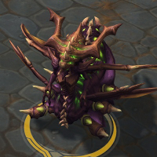
Zagara
Welcome to our Zagara guide for Heroes of the Storm. Here you will learn everything you need to know in order to play Zagara in a competitive environment, whether you play on your own or with a team.
Split Push Build
| Level 1 | Level 4 | Level 7 | Level 10 | Level 13 | Level 16 | Level 20 |
|---|---|---|---|---|---|---|
| 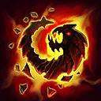 | 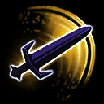 | 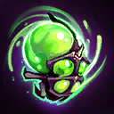 | 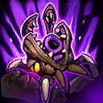 | 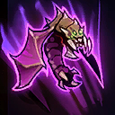 |
Larger maps with multiple objective locations (Cursed Hollow, Sky Temple, Garden of Terror, Infernal Shrines) tend to favor the Split Push Build where Zagara may take advantage of distracting moments of opportunity for the enemy team. Baneling Barrage Icon Baneling Barrage should be used for waveclear and to quickly deal massive amounts of damage to enemy structures, while Infested Drop Icon Infested Drop's primary purpose is to soak up ammo from enemy towers and forts. Zagara should constantly rotate around the Battleground via Nydus Network Icon Nydus Network to maximize the amount time she can effectively splitpush. Keep in mind that it will be much more difficult to effectively play the Split Push Build if they enemy team contains a high burst damage assassin Hero such as Zeratul or Nova. Heroes like these will frustratingly spend most of the match hunting down and picking off Zagara when she is overextended.
Team Fight Build
| Level 1 | Level 4 | Level 7 | Level 10 | Level 13 | Level 16 | Level 20 |
|---|---|---|---|---|---|---|
| 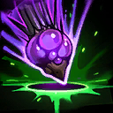 | 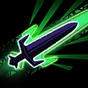 | 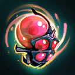 | 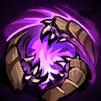 | 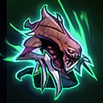 |  |
The Team Fight Build is designed to give Zagara the most effective blend of damage and utility in matches where crossing paths with enemy Heroes is frequent and unavoidable. Use Infested Drop Icon Infested Drop as often as possible to harass opponents and allow the spawned Roaches to provide vision and block certain enemy skillshots. Hunter Killer Icon Hunter Killer is Zagara's primary source of damage and (when possible) should be saved for the team's target of focusfire. Be patient when looking to cast Devouring Maw Icon Devouring Maw. Most often, Zagara should engage the enemy team with her other abilities and Basic Attacks, and use Devouring Maw when the opportunity arises. Try to consume multiple enemy Heroes by keeping note of their positioning and striking when they are grouped too closely together.
Go Back